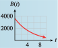

Subsection 2.5 Decay Factors
Before Example 2.3.7, we noted that a percent increase of \(r\) (in decimal form) corresponds to a growth factor of \(b = 1 + r\text{.}\) A percent decrease of \(r\) corresponds to a decay factor of \(b = 1 - r\text{.}\) In Part B of Investigation 2.4.1, each millimeter of plastic reduced the amount of light by \(25\)%, so \(r = 0.25\text{,}\) and the decay factor for the function \(P(x)\) is
Warning 2.5.9.
Note the difference in the two expressions for \(b\text{:}\)
- A percent increase of \(r\) produces a growth factor of \(b=1+r\text{.}\)
- A percent decrease of \(r\) produces a decay factor of \(b=1-r\text{.}\)
Example 2.5.10.
David Reed writes in Context magazine: "Computing prices have been falling exponentially—50% every 18 months—for the past 30 years and will probably stay on that curve for another couple of decades." An accounting firm invests $50,000 in new computer equipment.
Write a formula for the value of the equipment \(t\) years from now.
By what percent does the equipment depreciate each year?
What will the equipment be worth in \(5\) years?
-
The initial value of the equipment is \(V_0 = 50,000\text{.}\) Every \(18\) months, the value of the equipment is multiplied by
\begin{equation*} b = 1 - r = 1 - 0.50 = 0.50 \end{equation*}However, because \(18\) months is \(1.5\) years, we must divide \(t\) by \(1.5\) in our formula, giving us
\begin{equation*} V(t) = 50,000(0.50)^{t/1.5} \end{equation*} -
After \(1\) year, we have
\begin{equation*} V(1) = 50,000(0.50)^{1/1.5} = 50,000(0.63) \end{equation*}The equipment is worth \(63\)% of its original value, so it has depreciated by \(1 - 0.63\text{,}\) or \(37\)%.
-
After \(5\) years,
\begin{equation*} V(5) = 50,000(0.50)^{5/1.5} = 4960.628 \end{equation*}To the nearest dollar, the equipment is worth $4961.
Checkpoint 2.5.11.
The number of butterflies visiting a nature station is declining by 18% per year. In 1998, \(3600\) butterflies visited the nature station.
What is the decay factor in the annual butterfly count?
Write a formula for \(B(t)\text{,}\) the number of butterflies \(t\) years after 1998.
-
Complete the table and sketch a graph of \(B(t)\text{.}\)
\(t\) \(0\) \(2\) \(4\) \(6\) \(8\) \(10\) \(B(t)\) \(\hphantom{0000}\) \(\hphantom{0000}\) \(\hphantom{0000}\) \(\hphantom{0000}\) \(\hphantom{0000}\) \(\hphantom{0000}\)
\(0.82\)
\(B(t) = 3600\cdot 0.82^t\)
-
\(t\) \(0\) \(2\) \(4\) \(6\) \(8\) \(10\) \(B(t)\) \(3600\) \(2421\) \(1628\) \(1094\) \(736\) \(495\) 
We summarize our observations about exponential growth and decay functions as follows.
Exponential Growth and Decay.
The function
models exponential growth and decay.
\(P_0 =P(0)\) is the initial value of \(P\text{;}\)
\(b\) is the growth or decay factor.
If \(b \gt 1\text{,}\) then \(P(t)\) is increasing, and \(b = 1 + r\text{,}\) where \(r\) represents percent increase.
If \(0 \lt b \lt 1\text{,}\) then \(P(t)\) is decreasing, and \(b = 1 - r\text{,}\) where \(r\) represents percent decrease.